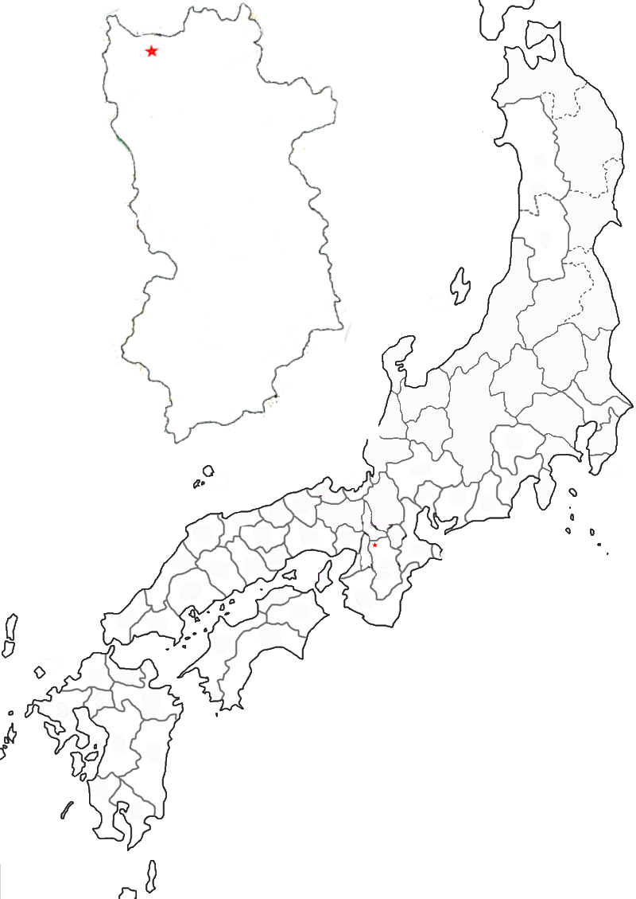

Poem #90 
ふるさととなりにしならのみやこにも色はかはらず花はさきけり
furusato to
narinishi nara no
miyako ni mo
iro wa kawarazu
hana wa sakikeri
narinishi nara no
miyako ni mo
iro wa kawarazu
hana wa sakikeri
Even at Nara-
the ancient royal city
now a former home -
the flowers have come into bloom
in the colors of the past.
the ancient royal city
now a former home -
the flowers have come into bloom
in the colors of the past.

Background Information
Heijō-kyō (Nara) was the site of the old capital during the Nara period. Emperor Kanmu moved from Nara in Yamato to Nagaoka in Yamashiro. Nara was the site of many Buddhist monasteries and temples and it was believed that Kanmu fled Nara to escape the growing Buddhist political power. The reason that Kanmu left is more complex than that, as Van Goethem describes in her book “Nagaoka: Japan’s Forgotten Capital”.
Poem 90 was written by the Nara emperor, sometimes associated with Emperor Heizei (McCullough). Heizei was the emperor who succeeded Emperor Kanmu.
Poem 90 was written by the Nara emperor, sometimes associated with Emperor Heizei (McCullough). Heizei was the emperor who succeeded Emperor Kanmu.